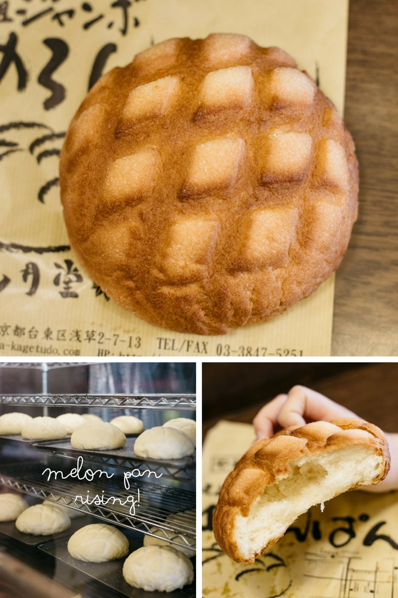

Melon Pan

Description
Melon bread, or ‘melon pan’, is a type of Japanese sweet bread. It’s super yummy but has no melon flavour, it’s just named for its appearance!
Ingredients
Bread Dough
- 300 g baker’s flour
- 40 g butter chopped
- 25 g sugar
- 4 g salt
- 160 ml milk
- 1 extra large egg
- 3 g dry yeast
Cookie Dough
- 240 g plain flour
- 1 tsp baking powder
- 80 g butter
- 80 g sugar
- 1 extra large egg
- 1/2 tsp Vanilla essence
- Granule sugar for sprinkle
Steps
- Make the cookie dough by placing the butter and sugar in a large bowl and beat until light and creamy.
- Add the egg and vanilla essence and mix until well combined.
- Fold through the flour and baking powder.
- Divide the cookie dough into 8 small balls and set aside in the fridge.
- Combine egg, yeast, milk and sugar in a small bowl or jug
- Combine the flour and salt in a large bowl.
- Make a well in the centre of the flour and add the liquid mixture and stir to form a soft dough.
- Transfer to an electric mixer fitted with a dough hook and knead for about 10 min or until smooth and elastic.
- With the mixer motor running, add the chopped butter until the butter is combined and a smooth and silky dough forms (about a further 10 minutes).
- Place the dough in a greased bowl and cover and set aside in a warm place to prove for 1 hour or until doubled in size.
- Divide the bread dough into 8 equal sized balls and knead on a lightly floured surface until smooth.
- Roll out the refrigerated cookie dough on cling wrap to 5mm thick.
- Once it is rolled place one bread dough on top of one cookie dough ball and wrap together using cling wrap.
- Take the cling wrap off and score the cookie dough surface diagonally and sprinkle the granule sugar.
- Repeat for all 8 bread rolls.
- Place them on a cooking paper lined oven tray and cover with clean damp cloth and set aside for about 40 min or until doubled in size.
- Preheat oven to 180 degree(356 f) and bake for 15 minutes.
Credits
Chopstick Chronicles
Home